Префектура Нагано · Судзака · еда
Мисо из деревянных бочек: мисоварня Koujiya Hondo Jyozoho в Судзаке, где с 1869 года сами растят кодзи
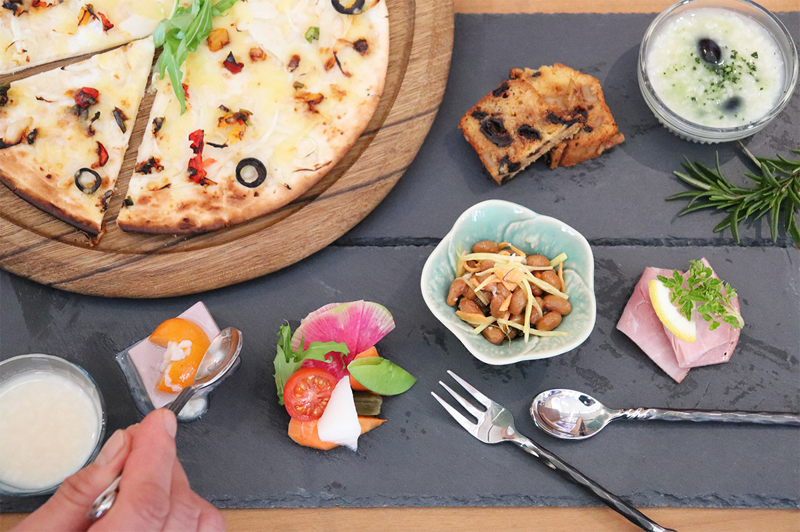
В Судзаке, на севере префектуры Нагано, семейная мисоварня больше 150 лет делает мисо так же, как при основателе: рисовый кодзи растят вручную, а пасту выдерживают в деревянных бочках в хранилище без отопления и охлаждения.
История
От кодзи к мисо и соевому соусу
Koujiya Hondo Jyozoho основали в 1869 году. Основатель учился ремеслу на сакэварне ещё в эпоху Эдо и открыл мастерскую, которая делала кодзи: рисовую закваску, от которой зависит вкус сакэ, соевого соуса и мисо. В те времена, в конце XIX века, мисо и соевый соус готовили дома, а соевые бобы и кодзи покупали у таких мастерских.
Второму главе семьи одного кодзи было мало, и он сам начал варить мисо и соевый соус. В 1961 году третий глава учредил компанию Koujiya Hondo Jyozoho, и производство мисо и соуса стало главным делом.
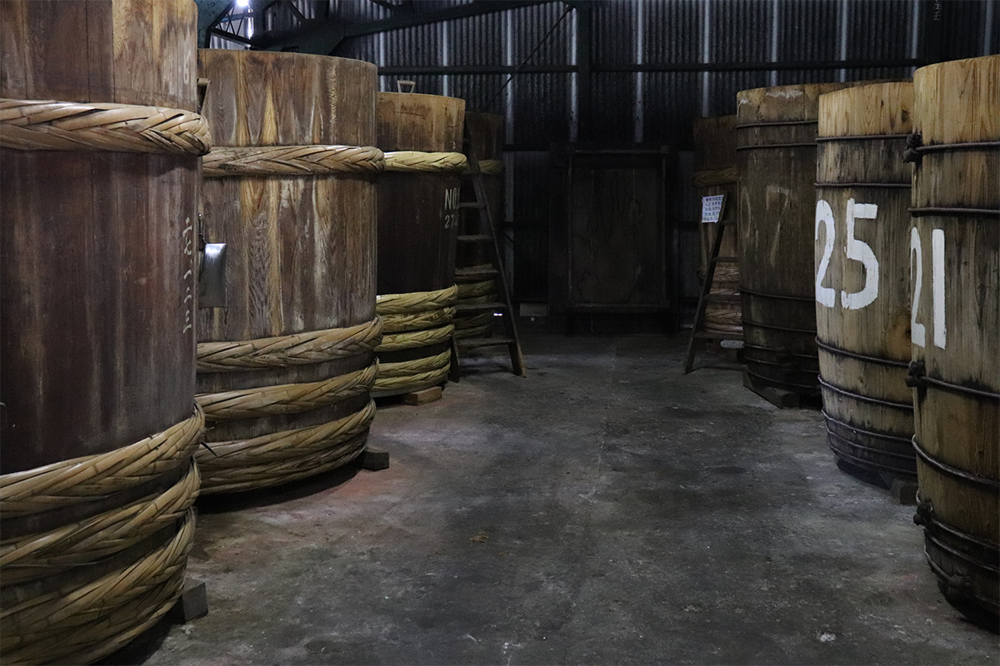
Цель мастерской простая: сохранить вкус и приёмы, которые передавались в семье, и оставить их следующим поколениям. Кодзи делают на грибке, который растёт только в Японии и считается «национальным грибом» страны. Времена изменились, производство механизировали, рынок заполнили дешёвые заменители, а здесь мисо, кодзи и соевый соус по-прежнему готовят руками. Такая еда полезна, но главное в ней вкус, который отзывается в душе.
Кодзи в деревянных ящиках
Рисовый кодзи здесь растят старым способом «муробута»: в деревянных ящиках. Каждый ящик ведут отдельно, следя за температурой и тем, как меняется рис, на глаз, на ощупь и по запаху. Чем больше труда вложено, тем сильнее отвечает кодзи.
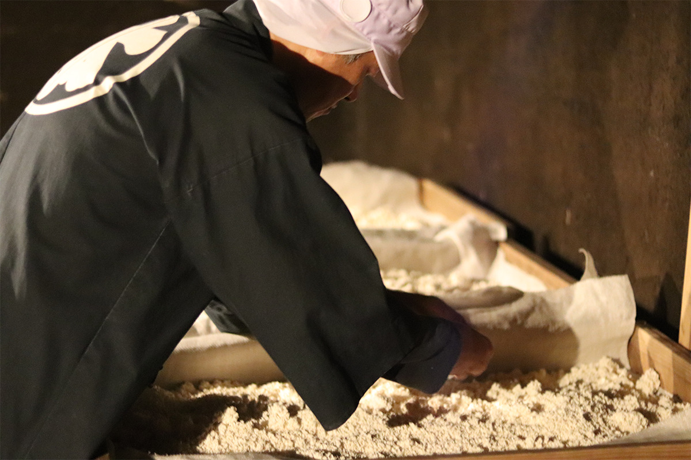
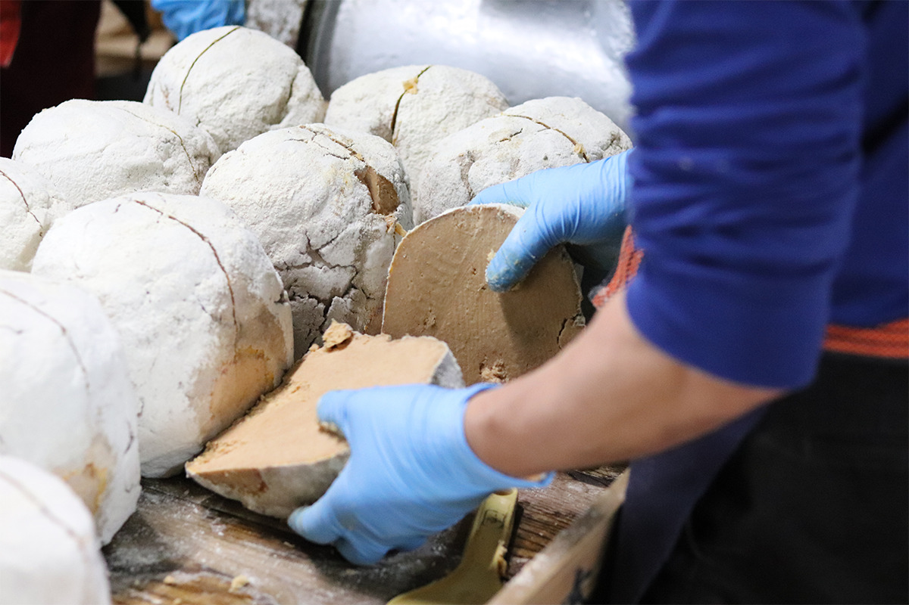
Сырьё
Нагано в каждой банке
Сырьё только японское, в основном из префектуры Нагано. Соевые бобы подбирают по сорту и месту выращивания под каждый вид мисо, а для кодзи берут только отборный рис из Нагано. Мисо зреет в амбаре без отопления и охлаждения, проходя через все сезонные перепады температуры Синсю. Такое естественное брожение даёт мягкий, насыщенный и глубокий вкус.
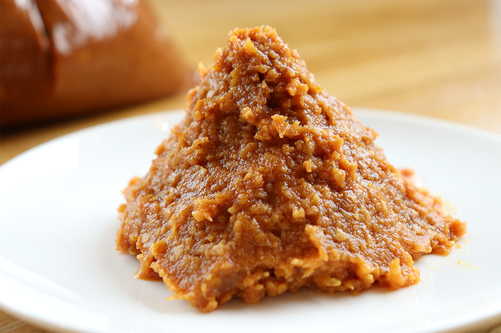
Острый перец чили для мисо с чили варня выращивает сама. Для остальных приправ берут местные продукты: бутоны белокопытника для «фуки-мисо», горные орехи для «орехового мисо», сакэ-касу (выжимки после сакэ) для мисо-соуса.
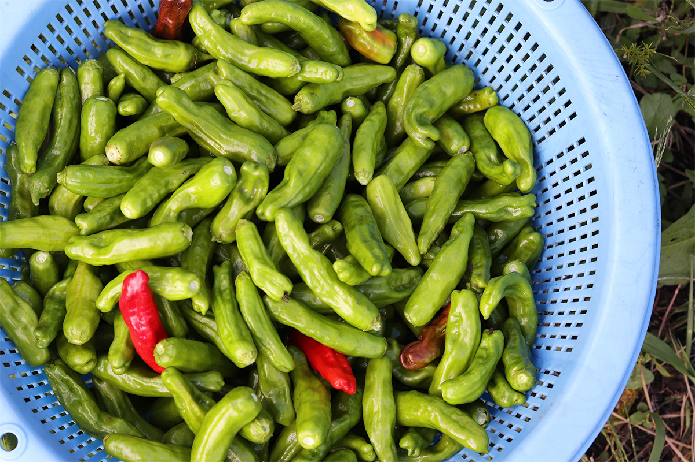
Мисо
Два главных сорта
«Курадаси мисо токусэн»
Самый популярный сорт варни, с удачным балансом сладости и соли. Подходит для мисо-супа с любыми продуктами, а ещё для овощей, тушёных блюд и масляного мисо «абура-мисо». Его делают из сои «Накасэннари» и риса, выращенных в Нагано, японской соли и спирта. Упаковка 800 г в 2021 году стоила 756 иен с налогом.
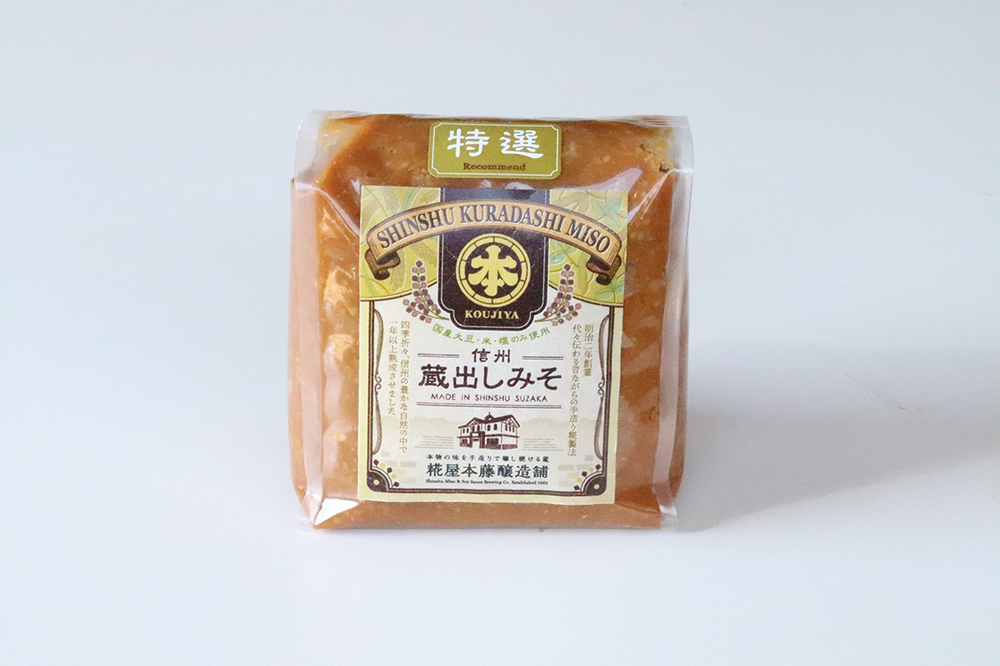
«Курадаси мисо тамадзукури»
Это мисо делают по старинке: каждый шарик «мисо-дама» лепят вручную. Получается насыщенное красное мисо Синсю с особым ароматом и глубоким вкусом, к которому быстро привыкаешь. Оно хорошо сочетается с морепродуктами и горными травами, его можно смешивать с обычным мисо. Состав тот же, что у «Токусэн»: соя «Накасэннари» и рис из Нагано, японская соль, спирт. Упаковка 800 г в 2021 году стоила 1188 иен с налогом.
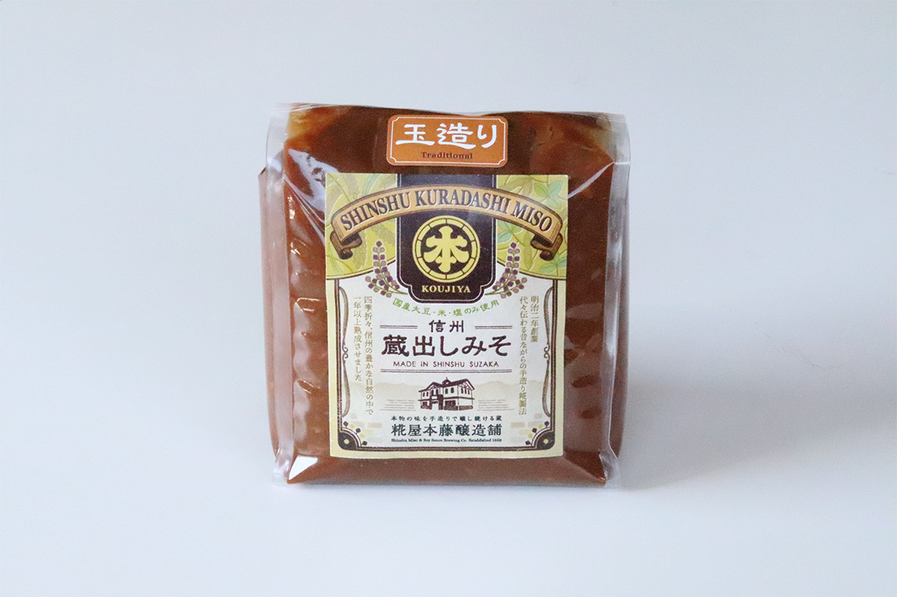
Приправа
Соевый соус с кодзи
Ещё одна находка производства: универсальная приправа из рисового кодзи и соевого соуса собственной выдержки. Кодзи даёт глубину и раскрывает вкус продуктов. Её кладут на рис с сырым яйцом, заправляют ею овощи, добавляют в тушёные блюда японской и западной кухни, в супы и маринады, и вкус сразу собирается. Банка 150 г в 2021 году стоила 540 иен с налогом. В составе соевый соус, рисовый кодзи и спирт.
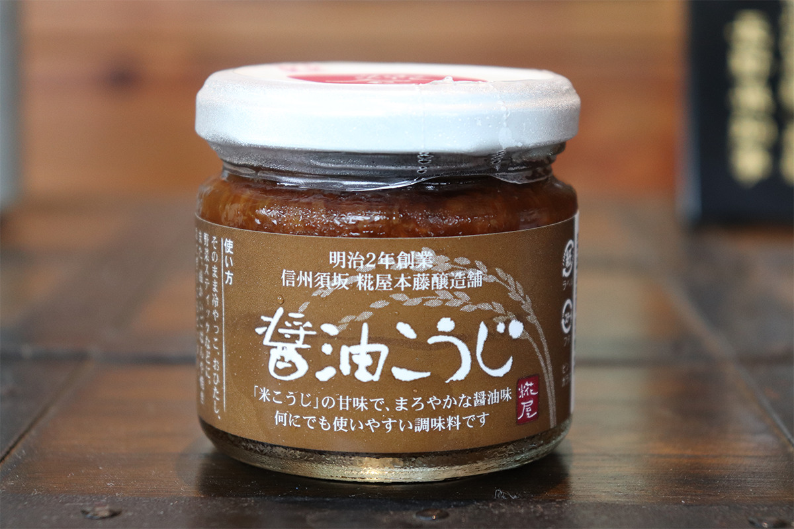
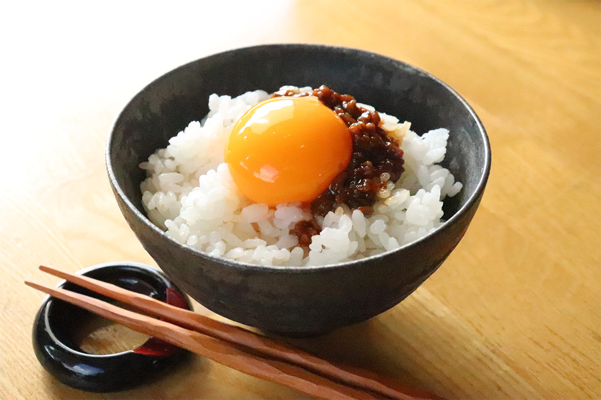
Кроме мисо варня продаёт соленья и необычные блюда из кодзи, например пиццу с сио-кодзи, солёным кодзи, и мороженое из кодзи.
Гостям
Уроки мисо, кафе и концерты
Варня рассказывает о японской традиционной еде на уроках, где можно сделать мисо своими руками. В 2021 году летом здесь работало «Кодзия кафе»: блюда из мисо, амадзакэ и других продуктов из кодзи, всё домашнего приготовления. Варня служит и местом встреч для жителей округи: здесь проходят концерты и мастер-классы.
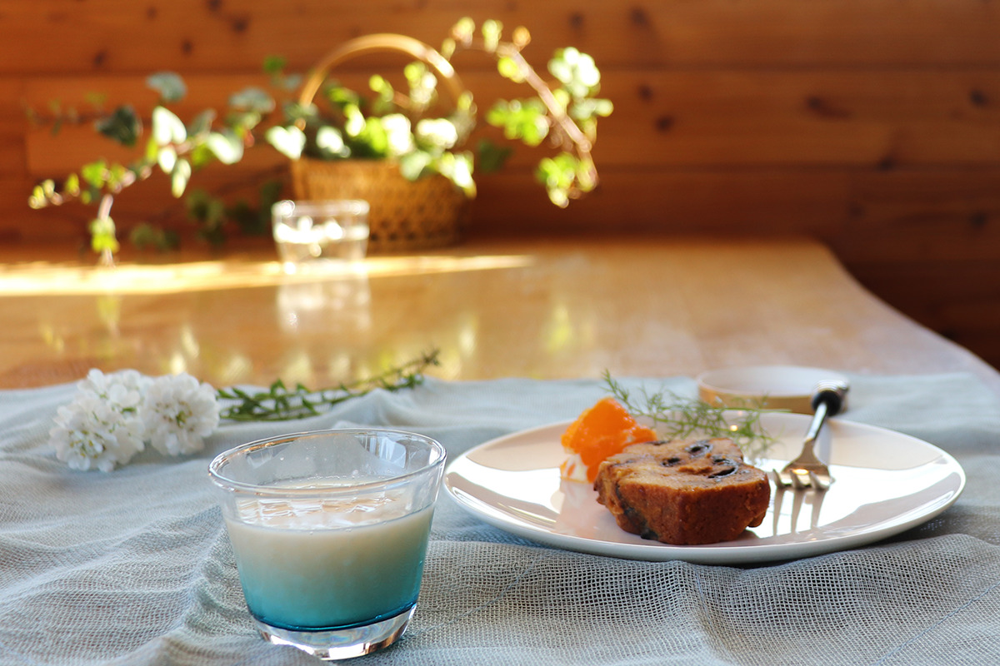
За полтора века варня не потеряла связи с округой и делает свои продукты вместе с ней. Рекомендуем заглянуть, если окажетесь в Нагано.
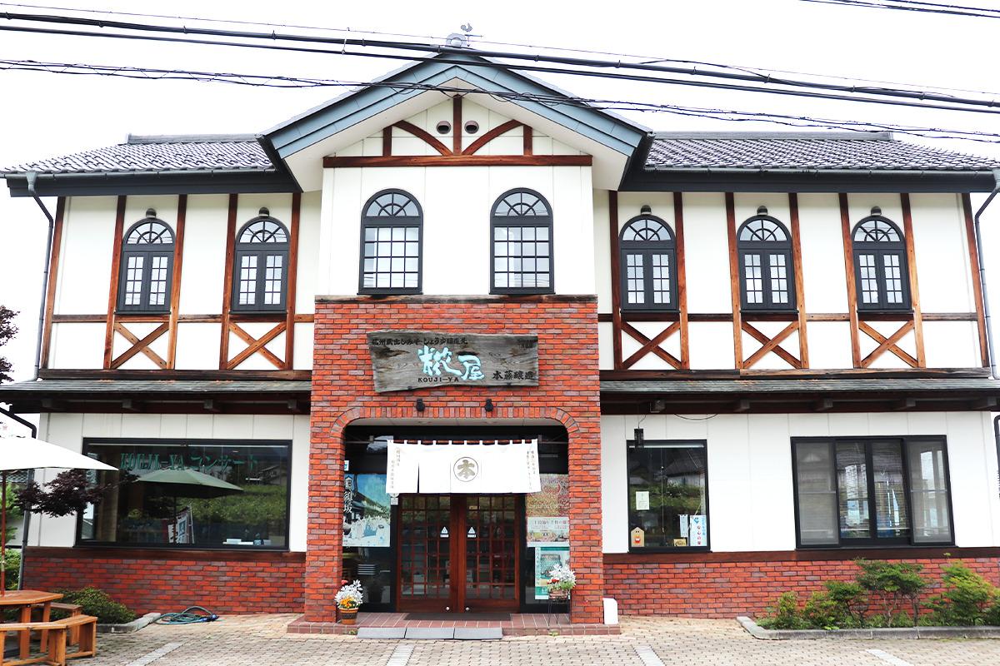
Koujiya Hondo Jyozoho
- Адрес
- префектура Нагано, Судзака, Нобэ, 1366
- Телефон
- +81 26-245-0456
- Сайт
- 528.jp